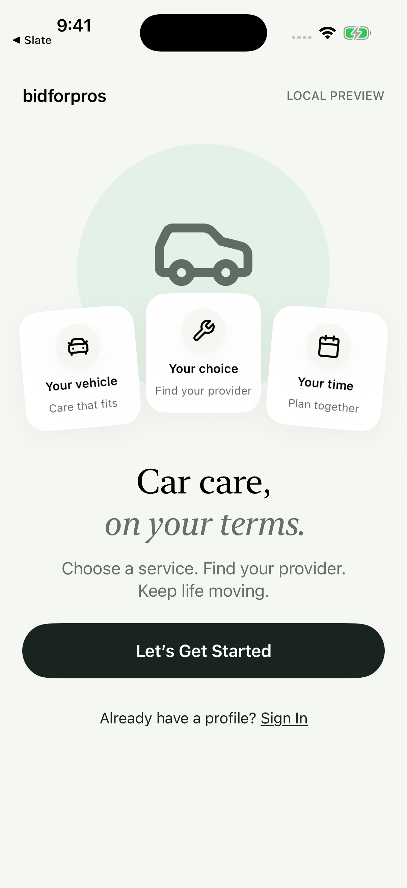
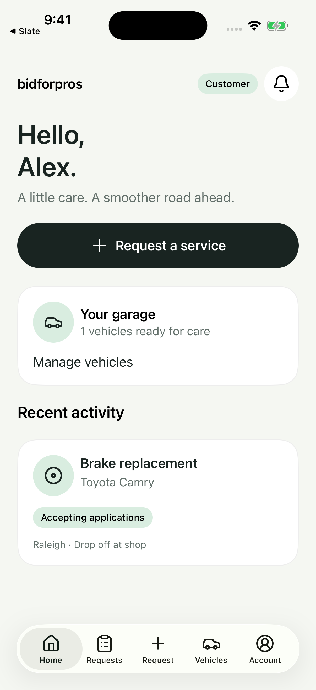
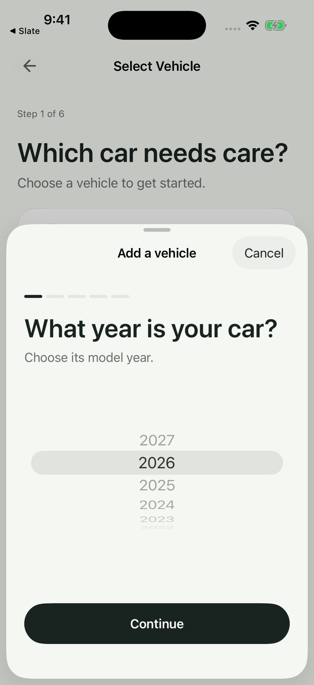
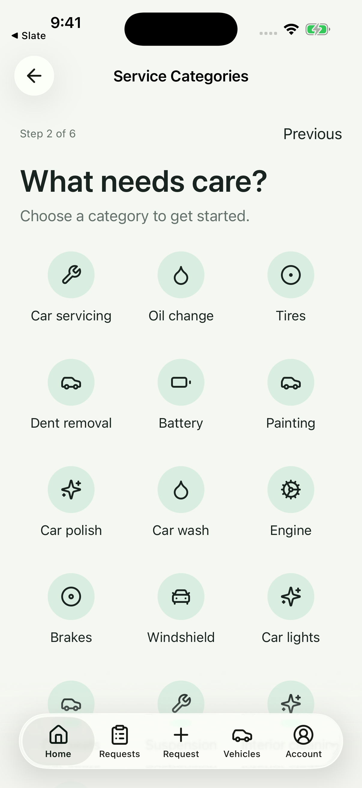
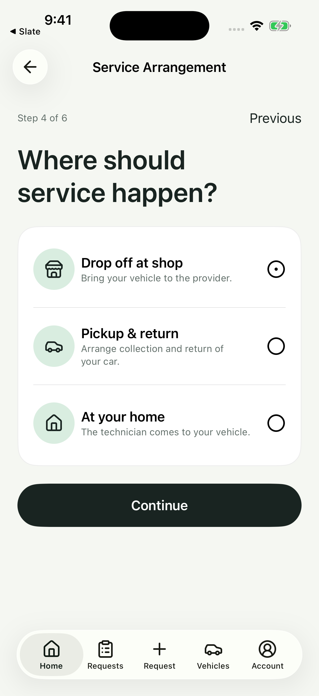
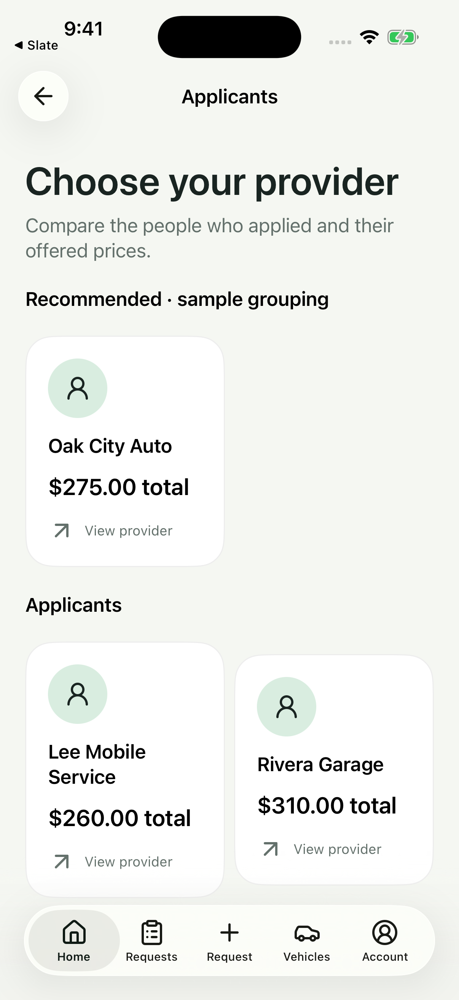
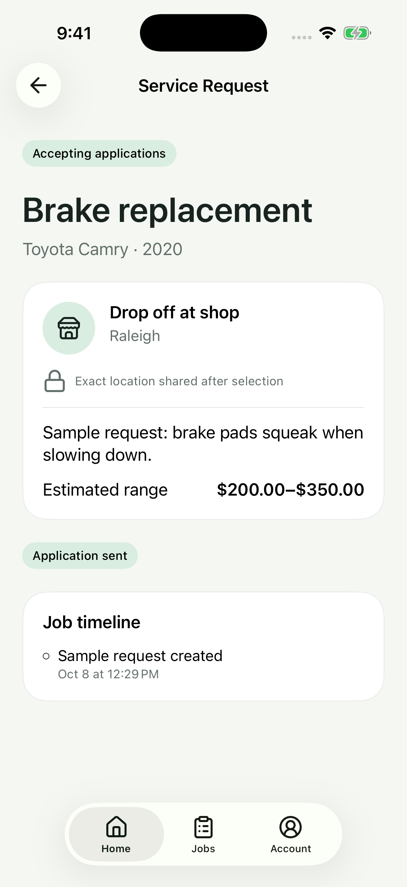
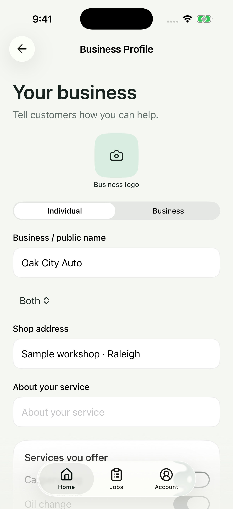

A work in progress · iOS
Car care
on your terms
A simpler way to connect car owners with auto-service providers. Explore the real screens as we build it.
The screen collection
Select a screen for a closer look.


Car care, on your terms
The entry point introduces vehicle care, provider choice, and scheduling.


Customer dashboard
Customers can request service, manage their garage, and follow recent requests.


Guided vehicle setup
A bottom sheet guides customers through year, make, model, license plate, and review. Shown: the year picker.


Find the right service
Customers browse service categories before choosing a specific service. The full scrollable catalog also includes an option to describe an unfamiliar issue.


Flexible service arrangements
Choose shop drop-off, pickup and return, or a technician visiting the customer’s home.


Compare providers and prices
Customers compare applicants’ offered totals and a recommended group. Recommendations and prices shown are illustrative fixtures.


The provider’s view
Providers see the vehicle, service need, arrangement, area, estimated range, application state, and request timeline. Exact location is withheld before selection.


Provider business profile
Individuals and businesses can describe their operation, add a logo, and maintain their public profile and services.
The design journal
Under the hood
A closer look at Bid for Pros as it takes shape. Follow the progress, one release at a time.
First look. First gear.
Eight screens. One early look at a better way to find your next pro—from adding your vehicle to comparing providers, plus a peek at the other side of the bid.
Explore this snapshot →
A preview of what’s taking shape.
These are unretouched screenshots from a local iOS prototype, using fictional sample profiles. Prices and recommendations are illustrative. Authentication, verification, payments, messaging, and live tracking are not production services yet. Some screens scroll beyond the captured view.